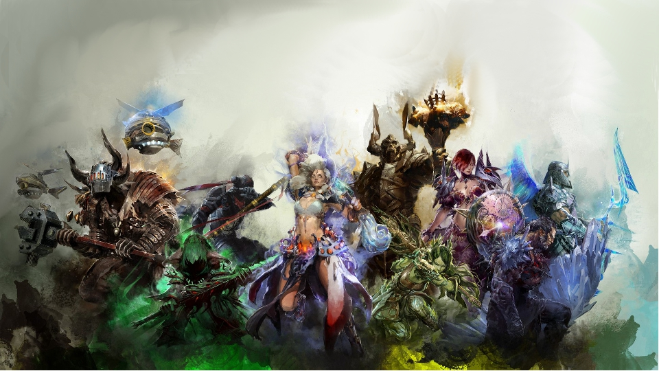
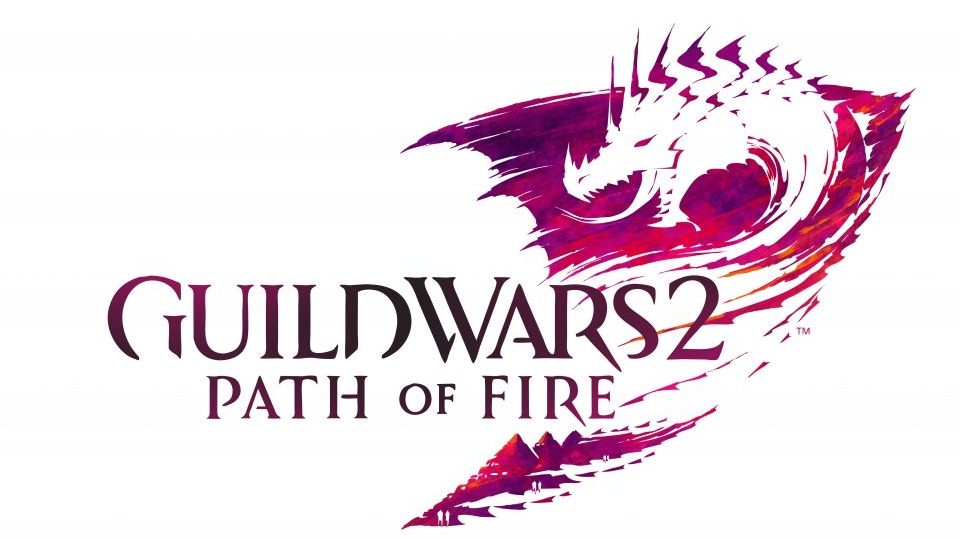
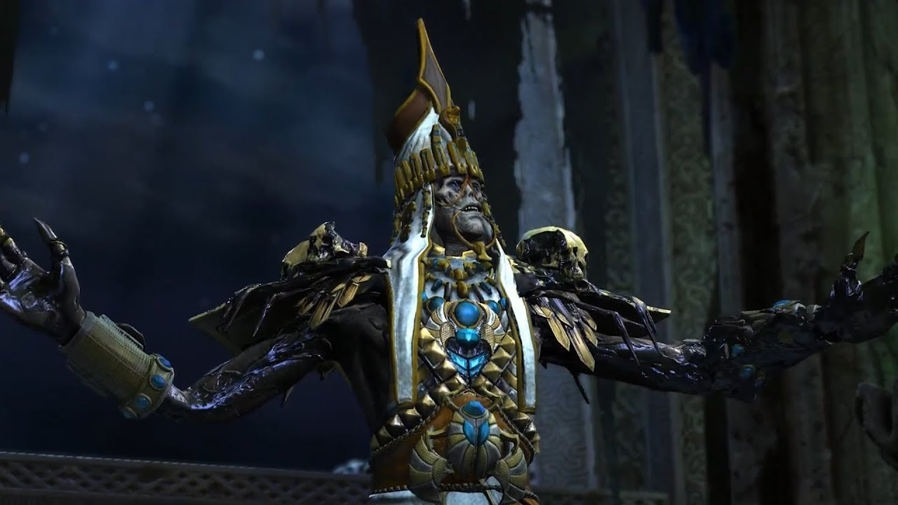
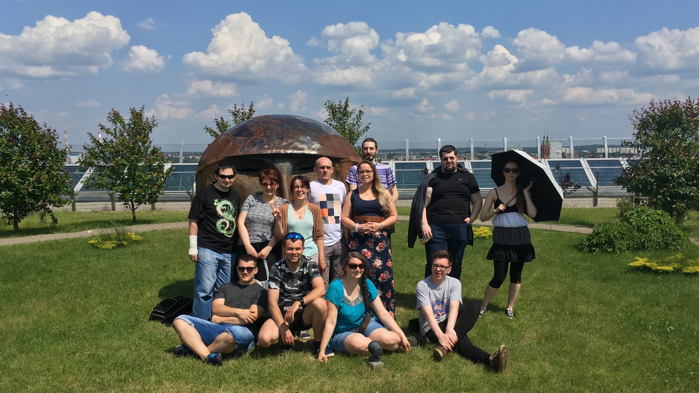
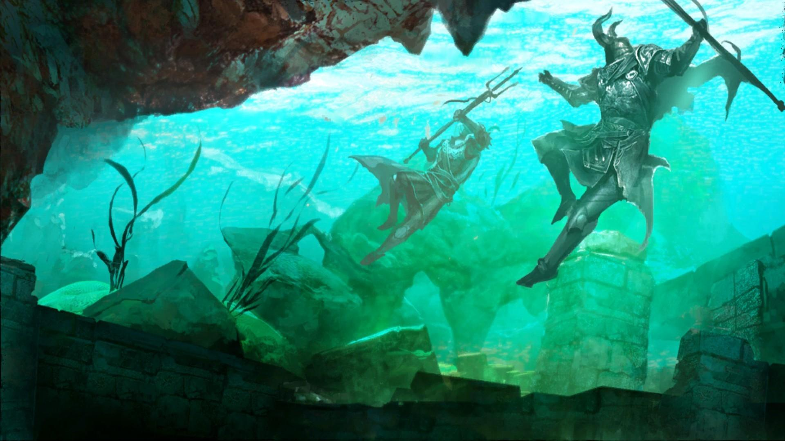

Archiwum | Newsy
Archiwum Newsów
| 14.07.2018 | Long Live the Lich - Balance Patch Umiejętności oraz World Polish |
Poniższy tekst został przygotowany na podstawie Game Update Notes: July 10, 2018. Na portal markedbyfury.eu trafił za zgodę tłumacza, który opublikował tłumaczenie w ramach forum GuildWars2.pl. |
| 04.07.2018 | Long Live the Lich – Podsumowanie AMA z Deweloperami |
Poniższy tekst został przygotowany na podstawie GW2 Long Live the Lich Developer AMA Summary. Na portal markedbyfury.eu trafił za zgodę tłumacza, który opublikował tłumaczenie w ramach forum GuildWars2.pl. |
| 27.06.2018 | Long Live the Lich |
Od 26 czerwca możemy cieszyś się nowym epizodem (trzecim) sezonu czwartego Living Story. Tym razem nowy content nosi nazwę "Long live the Lich" i co chyba oczywiste odnosi się do postaci jednego z aktualnie wysuwających się na pierwszy plan antagonistów - potężnego Licza Palwy Joko. Nieumarłego licza, którego mieliśmy okazję poznać w Guild Wars: Nightfall, a także story dodatku Path of Fire. |
| 31.05.2018 | Podsumowanie zlotu w Białymstoku |
W ostatni weekend maja nasza gildia odbyła swój coroczny zlot, w tym roku w wyniku głosowania wybrany został Białystok w którym organizacją zajęła się nasza koleżanka Inka.
Tradycyjnie gildiowicze zaczęli przyjeżdżać w piątek (a trzeba nadmienić że niektórzy mieli naprawdę daleko - Holandia, Irlandia czy Niemcy). |
| 08.05.2018 | Underwater Combat Redesign |
Patch z 8 maja 2018 przynosi do nas liczne zmiany dotyczące walki pod wodą. Chodź ma on przede wszystkim postać balance patcha, rozumianego jako zmiany w funkcjonalności i zbalansowania obrażeń jakie poszczególne klasy są w stanie generować, to wprowadza także nowy achievement typu scavenger hunt. |